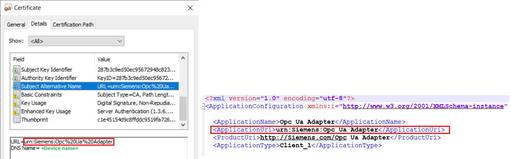
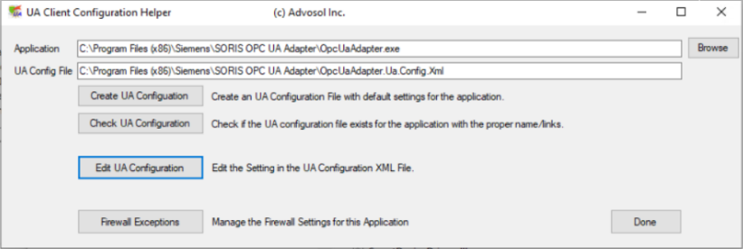
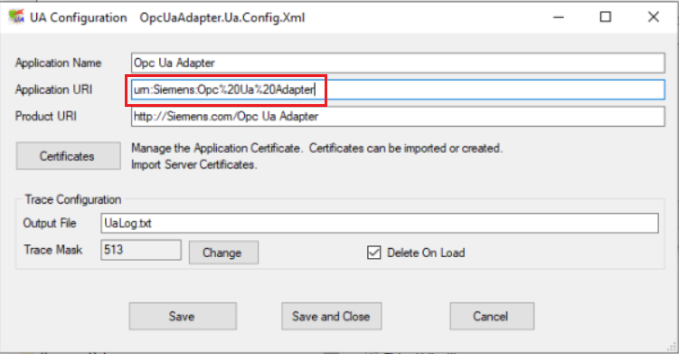

Troubleshooting BadCertificateUriInvalid Error
When connecting to an OPC UA server using a security policy different from None (endpoint different from level:0 None Policy:None), the following error might occur:
BadCertificateUriInvalid
This happens because the URL used for the client application is different from the one written in the client certificate.
To solve this issue, do the following:
- Navigate to C:\Program Files (x86)\Siemens\SORIS OPC UA Adapter.
- Open the certificate Opc UA Adapter [thumbprint].der.
- Open the OpcUaAdapter.Ua.Config.Xml file with an editor.
- Check the Subject Alternative Name field of the adapter certificate and the ApplicationUri tag of the XML file.
- If their content is not the same:

- Do the following:
a. Stop the OpcUaAdapter service.
b. In the OpcUaAdapter.Ua.Config.Xml file, replace the row<ApplicationUri>urn:Siemens:Opc Ua Adapter</ApplicationUri>with:<ApplicationUri>urn:Siemens:Opc%20Ua%20Adapter</ApplicationUri>and save the changes. - Restart the OpcUaAdapter service.
See also the following alternative solution:
- Run the program UaClientConfigHelperNet4.exe as Administrator.
- Select the OpcUaAdapter.exe application and in the UA Client Configuration Helper tool click Edit UA Configuration.

- Change Application URI according to the contents of the URL certificate.

- Click Save and Close.
- Restart the OpcUaAdapter service.